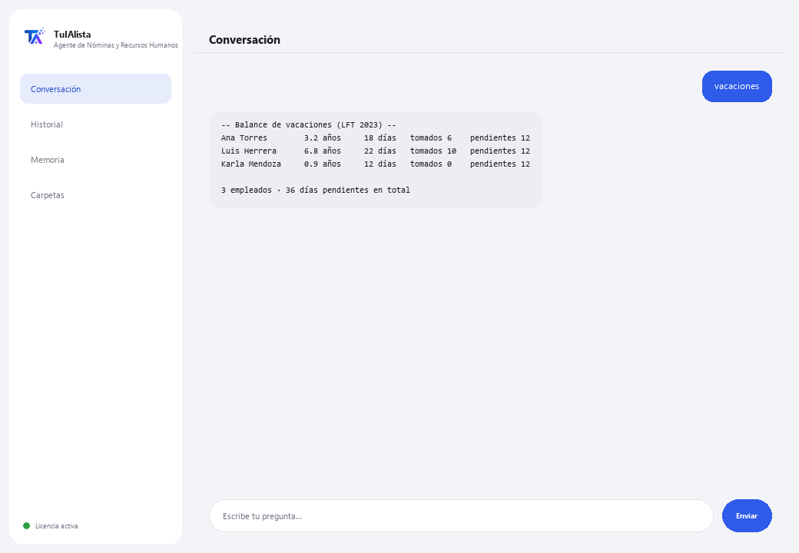

Agente de Nóminas y Recursos Humanos
Organiza a tu plantilla, calcula vacaciones según la LFT y vigila las fechas críticas de RH — sin que los datos salgan de tu equipo.
¿Qué resuelve y qué necesitas?
Los datos de empleados son ultra-sensibles y no pueden andar en la nube. Este agente los procesa 100% en tu máquina: carga tu plantilla, calcula el balance de vacaciones según la Ley Federal del Trabajo y te avisa de fechas críticas (fin de contratos, aniversarios) antes de que se te pasen.
- Necesitas: tu clave de licencia (TIA-XXXX-XXXX-XXXX-XXXX) y tu plantilla en Excel o CSV. Nada de Python ni conocimientos técnicos.
- Primer resultado en menos de 5 minutos: instalas, activas, eliges tu carpeta y corres vacaciones para ver el balance de cada empleado.
- Los datos de tus empleados nunca salen de tu computadora — el cálculo corre localmente.
soporte@tuialista.com o entra a tuialista.com/soporte — normalmente respondemos el mismo día hábil.1 Qué hace este agente
Tú le señalas la carpeta con tu plantilla (en Excel o CSV) y él:
- Carga los datos de empleados detectando las columnas automáticamente (nombre, puesto, salario, fecha de ingreso, tipo de contrato...), aunque estén con nombres distintos.
- Calcula el balance de vacaciones según la Ley Federal del Trabajo de México (reforma “Vacaciones Dignas” 2023).
- Te avisa de fechas críticas: fin de contratos y aniversarios laborales próximos.
- Genera un resumen de nómina (total, promedio, por departamento y tipo de contrato).
- Lista aniversarios próximos para reconocimientos.
- Alerta de contratos por vencer.
- Genera un reporte de plantilla (altas, bajas, headcount por área).
- Responde preguntas de RH con contexto anonimizado.
El resultado: un área de RH organizada, con las fechas bajo control y los datos siempre en casa.
2 Instalación (2 minutos)
Para Windows. No hace falta internet permanente ni subir nada a la nube.
Baja el instalador desde tuialista.com/descargar (agente Nóminas) y ábrelo. Crea un acceso directo en tu escritorio con el logo — no requiere Python ni terminal.
Doble clic al ícono nuevo. Pega tu clave de licencia (te llegó por correo al comprar) y pulsa Activar. Verás una palomita verde cuando sea válida.
Selecciona la carpeta con tu plantilla y pulsa Comenzar a usar el agente. La próxima vez arranca directo — recuerda tu clave y tu carpeta.
3 Cómo usarlo
El agente abre una ventana de chat, como una app de mensajería — no es una pantalla negra de programador. Escribes tu comando o tu pregunta en el cuadro de texto de abajo, pulsas Enviar (o Enter), y la respuesta aparece como un mensaje, igual que en esta imagen real:

Los comandos siguientes son las palabras que puedes escribir en ese mismo cuadro de texto:
> vacacionesPor empleado: su antigüedad, los días de vacaciones que le corresponden (tabla de la LFT con la reforma 2023), los tomados y los pendientes.
> fechas [días]Eventos de RH de los próximos N días (30 por defecto): fin de contratos y aniversarios laborales, ordenados por urgencia. Ej.: fechas 45.
> nominaTotal de nómina, salario promedio, máximo y mínimo, y desglose por departamento y por tipo de contrato — sin exponer datos individuales sensibles innecesariamente.
> aniversarios [días]Empleados que cumplen aniversario laboral en los próximos N días (60 por defecto).
> contratos [días]Contratos temporales por vencer en los próximos N días (45 por defecto), incluidos los recién vencidos.
> plantillaTotal de plantilla, activos, bajas, altas del año, y desglose por departamento y tipo de contrato.
> ¿pregunta libre?Escribe cualquier duda en lenguaje natural, ej.: ¿cuántos empleados cumplen 5 años este trimestre?
> salirTermina la sesión (también funciona exit).
4 Ejemplos de uso común
Revisión mensual de RH
fechas 30 → contratos 45
Preparar vacaciones del año
vacaciones
Reporte para dirección
nomina → plantilla
Una consulta puntual
¿quién cumple aniversario el próximo mes?
5 Preguntas frecuentes
¿Los datos de mis empleados se suben a internet?
¿Qué formatos acepta?
¿Necesito nombrar las columnas de una forma exacta?
¿Cómo calcula las vacaciones?
¿El cálculo de vacaciones es legalmente vinculante?
¿Expone los salarios individuales?
¿En qué idioma responde?
¿Modifica mi archivo de empleados?
Actualicé la plantilla, ¿la toma?
¿Puedo tener varios archivos?
6 Solución de problemas
No carga a los empleados / dice “0 empleados”
Detecta mal una columna
Los cálculos de vacaciones no cuadran con lo esperado
Dice “Licencia no válida” o pide reconectar
“No hay proveedores de IA configurados”
¿Ninguna de estas soluciones resolvió tu problema? Escríbenos directamente — con gusto lo revisamos contigo.
soporte@tuialista.com o entra a tuialista.com/soporte — normalmente respondemos el mismo día hábil.7 Privacidad y confidencialidad
Los datos de tus empleados nunca salen de tu computadora.
- El agente carga y procesa la plantilla localmente, en tu propio equipo. No sube datos de empleados a ningún servidor.
- El cálculo de vacaciones, los reportes de nómina, las fechas críticas y el headcount se calculan en tu máquina.
- Lo único que viaja por internet es: (1) una comprobación de que tu licencia está activa — que no incluye datos de empleados —, y (2) al hacer una pregunta libre, se envía un contexto anonimizado (resúmenes agregados, sin exponer salarios individuales por defecto) al motor de IA para redactar la respuesta.